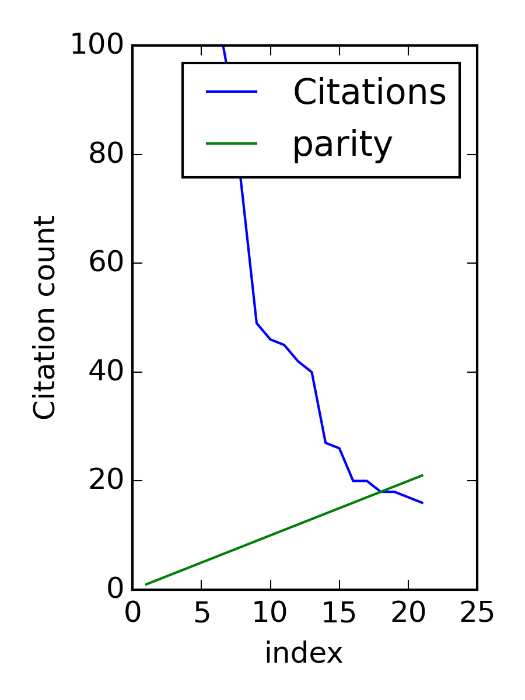

An example of automating data sharing through authoring tools
John R. Kitchin, Ana E. Van Gulick, and Lisa D. ZilinskiIn the current scientific publishing landscape there is a need for an authoring workflow that easily integrates data and code into manuscripts and that enables the data and code to be published in reusable form. Automated embedding of data and code into published output will enable superior communication and data archiving. In this work we demonstrate a proof of concept for a workflow, org-mode, which successfully provides this authoring capability and workflow integration. We illustrate this concept in a series of examples for potential uses of this workflow. First, we use data on citation counts to compute the h-index of an author, and show two code examples for calculating the h-index. The source for each example is automatically embedded in the PDF during the export of the document. We demonstrate how data can be embedded in image files, which themselves are embedded in the document. Finally, metadata about the embedded files can be automatically included in the exported PDF, and accessed by computer programs. In our customized export, we embedded metadata about the attached files in the PDF in an Info field. A computer program could parse this output to get a list of embedded files and carry out analyses on them. Authoring tools such as Emacs + org-mode can greatly facilitate the integration of data and code into technical writing. These tools can also automate the embedding of data into document formats intended for consumption.
\keywords{data sharing, embedding, org-mode, authoring}
1 Introduction
Motivation for sharing research outputs has accelerated in the past few years with the increase of funding agency requirements and government policies whitmire-2015-table-summar. Sharing research data and scholarship has moved to the forefront of these funders attention due to the government’s increased focus on maximizing return on investment of their research programs zilinski-2014-evolut-data. Additionally, publishers are increasingly requiring the sharing of research data, software code, analysis pipelines, and other supplemental documentation. However, there is little to no guidance on what information needs to be shared, how the information should be shared, how these materials should be linked to one another and any associated publications, or how to pay for depositing and preserving the information. This shift has created a need to investigate publishing and authoring tools and workflows that facilitate the integration of data and code into technical writing in order to support researchers in the publication, dissemination, and accessibility of these research products.
Currently, translating data and analysis tools from the research bench to the published paper has been made difficult by the workflows implemented by publishers. While it is common to include supporting information files with published manuscripts, they are not required, and there is no standard format or guidelines for what should be in them. For example, while Elsevier allows for the enrichment of publications through its Content Innovation content-conten-innov by allowing for the inclusion of interactive content (e.g. U3D models, maps, datasets, and audio files), there is no metadata specific to the additional content nor is there a way to find out which articles contain interactive files. Nature allows for the inclusion of extended data figures and tables, but only allows a maximum of ten items per paper nature-manus-format-guide.
Notably, in an Elsevier pilot project, The Executable Paper, the computer science community was challenged to "address the question of how to reproduce computational results within the confines of the research article" 2015-execut-paper. Although the project ended in 2015, the code and datasets are still available with the online publications. Elsevier has acknowledged the challenge of integrating executable code and data into the current publishing workflow, but has yet to fully address the needs of the research community.
In the current publishing landscape, data and analysis protocols or code are most often included in a published paper or its supplementary materials as part of a PDF. When the data is in tabular or graphical form, it is not easy, or in some cases not even possible to reuse the data without error-prone practices of copy and paste, or digitization. Even when the data is accessible, and downloadable by a researcher, it loses the context of the paper. It is also not discoverable if the data does not have any metadata or description of its own, or if the metadata of the original work does not indicate that there is data within. A build process for this embedded data that can be easily integrated into a research workflow would be valuable for the research and publishing community both.
There are some existing tools that enable the integration of code and data in a narrative context. For example, the iPython notebook and its successor Jupyter perez-2007-ipyth,projec-juypy,shen-2014-inter and the MatLab notebook mathworks-matlab-noteb have notebook-like capabilities. The commercial tools Mathematica and Maple also have notebook features. Still other approaches exist for specific applications and tools leveque-2012-reprod,stodden-2012-reprod-resear,stodden-2013-best-pract. These tools are rarely used, however, to write full papers. The R community has developed a software package known as Sweave sweave which enables R code to be embedded in LaTeX documents. Many of these ideas can be traced back to the early ideas of literate programming by Knuth knuth-1984-liter-progr,knuth-1992-liter-progr.
The ActivePapers project hinsen-2015-activ is a more aggressive approach than a simple notebook. This approach views a "paper" as a file in HDF5 format, which enables data to be referenced by the article DOI and HDF5 path to the object. Code is stored in the file in a bytecode form that can run in a Java virtual machine. A python implementation was also considered in that work. The authors noted in that work that "there is no straightforward way to adapt legacy software to such a framework."
Similarly, the Research Object project research-object is creating tools for making archives of code, data and narrative writing, as well as tools for interacting with these archives. Their vision looks beyond the PDF as a format for publication. At the time of this writing, they provide software packages in Python, Java, and Ruby for working with their ideas.
Despite the number of partial solutions developed, and decades of effort, none of these solutions has achieved wide-spread use. Some solutions have solved problems that are too narrow for general use, e.g. programming language specific solutions only address the needs of a sub-community. Other solutions while technically feasible require too large a change of behavior to enable wide-spread adoption. In the notebook solutions, tools have not been created that allow the notebook to smoothly transition to the manuscript. There is usually a transition from one tool (the notebook) to another (the manuscript preparation tool). The manuscript preparation tools, e.g. Word, or a text editor, do not typically provide functionality to help with publishing code/data.
A workflow that integrates data into manuscript preparation, and that automates embedding of data and code into published output will enable superior communication and data archival. We believe that new authoring tools and workflows will be required to enable this. Here we demonstrate feasibility for embedded data as a proof of concept for a seamless writing and building process. In our proof of concept, we use a lightweight text markup language called org-mode Dominik201408 with a powerful text editor Emacs. This tool chain can be integrated throughout all the stages of research and manuscript preparation. At this time, Emacs + org-mode provides all the functionality needed for the demonstration, but other tool chains could be adapted to provide similar functionality.
org-mode is a light-weight text markup language that integrates narrative text, equations, figures, tables, and code into a single document Dominik201408,schulte-2011-activ-docum,schulte-2012-multi-languag,kitchin-2015-data-surfac-scien,kitchin-2015-examp. Emacs provides a library of code that can parse an org document into a data structure, and then export the data structure to another document format, e.g. LaTeX, HTML, markdown, etc., much like XSLT can transform XML to other formats. The export can be customized to get precisely the desired output, as well as new output formats. This customization is essential, as it will enable the automatic embedding of data in the output files. Notably, Emacs provides an authoring environment to write org documents in mostly plain text, and in this environment the documents contain executable code blocks, sortable tables, and hyperlinked text integrated with the narrative text of the document.
org-mode documents contain "data". The tables and source code blocks in an org-mode document can literally be used as a source of data in code blocks. In the standard conversion of an org document to HTML or PDF (via LaTeX), they are converted to HTML or LaTeX tables, or syntax highlighted code representations, which are not easily read by a machine for reuse as data. These are human readable, but direct reuse of the data and code is limited to copy and paste operations, or tedious parsing. It is possible, however, to customize the export of a document, and to fine tune the export of each element in an org document. In this manuscript, we show how the contents of a table can be written to a comma-separated value file, and subsequently embedded in a PDF, or linked to in an HTML file. Similarly, each code block can be written to a source file, and embedded in a PDF or linked to in an HTML file. All of this can be automated to occur at the document export stage, requiring no additional work by the author to embed and subsequently share the data.
The approach is not unique to org-mode. A Matlab m-file can be "published" to XML and then transformed via XSLT to a variety of formats including HTML and PDF. Through a custom markup language narrative text, LaTeX equations, and figures can be embedded in comments in the m-file. IPython perez-2007-ipyth and Jupyter projec-jupy notebooks can also be converted from their native formats to other document formats. Both of these examples share the idea of exporting the working version of a document to a final version designed for consumption, and both could implement the ideas posed in this paper. Neither example, however, is as flexible as org-mode is in integrating all of the components needed in scientific publishing.
In this paper, we illustrate our ideas in a series of domain-general examples. First, we use data on citation counts in a table to compute the h-index of an author. In the supporting information version of the manuscript the data in this table will be stored as a comma-separated value file in the PDF. We show two code examples for calculating the h-index, and the source for each example is automatically embedded in the PDF during the export of the document. We show how data can be embedded in image files, which themselves are embedded in the document. Finally, we show how metadata about the embedded files can be included in the exported PDF, and accessed by computer programs.
2 Methods and results
We first illustrate the embedding of data and code with a simple example of computing the h-index of an author. "A scientist has index \(h\) if \(h\) of his or her \(N_p\) papers have at least \(h\) citations each and the other \((N_p - h)\) papers have ≤ \(h\) citations each. " hirsch-2005. Table citation-counts shows a list of citation counts for the top 21 cited papers of the first author of this manuscript (Kitchin) in descending order.
| index | # citations |
|---|---|
| 1 | 1085 |
| 2 | 451 |
| 3 | 372 |
| 4 | 289 |
| 5 | 215 |
| 6 | 108 |
| 7 | 94 |
| 8 | 72 |
| 9 | 49 |
| 10 | 46 |
| 11 | 45 |
| 12 | 42 |
| 13 | 40 |
| 14 | 27 |
| 15 | 26 |
| 16 | 20 |
| 17 | 20 |
| 18 | 18 |
| 19 | 18 |
| 20 | 17 |
| 21 | 16 |
One can see by inspection of Table citation-counts that the h-index for this set of data is 18. That is to say that in this set of papers, 18 papers have been cited 18 or more times, and every other paper in the set is cited 18 times or less. A computer code can also calculate the h-index, for example, Listing h-index shows an Emacs-lisp code that does this. We chose Emacs-lisp for this example because in a very compact form, we can read the data from this document, and in a simple loop calculate the h-index. This illustrates the use of a document as a data source. Listing h-index-python shows the same algorithm written in Python. A subtle difference in this code is that the data is passed directly from Table citation-counts to the code within the document. The working version of this document is fundamentally and functionally different than the final version designed for consumption. This is not evident in the published version of this document, but org-mode enables this during manuscript preparation.
(let* ((table-data (org-babel-ref-resolve "citation-counts")) ;; reads the table from the document we know there is ;; a header, and an hline, so here we delete the hline, ;; and take the rest of the data (data (cdr (org-babel-del-hlines table-data)))) (format "h-index = %s" (loop for (index count) in data until (> index count) finally return (- index 1))))
RESULTS: h-index = 18
for index, count in data: if index > count: print 'h-index = {}'.format(index - 1) break
RESULTS: h-index = 18
A graphical visualization of the h-index is the intersection of a parity line with the citation data. Listing h-index-graphical shows a Python script that generates a plot to illustrate this, again, using the data embedded in the document (Fig. fig-hindex).
import matplotlib.pyplot as plt plt.figure(figsize=(3, 4)) # the citation curve plt.plot([x[0] for x in data], # the index [x[1] for x in data], # the citation count label='Citations') # the parity line plt.plot([x[0] for x in data], # the index [x[0] for x in data], # the index label='parity') plt.legend(loc='best') plt.ylim([0, 100]) plt.xlabel('index') plt.ylabel('Citation count') plt.tight_layout() plt.savefig('h-index.png', dpi=300)

Figure 1: Visualization of the h-index. The h-index is defined approximately by the index where the intersection of the two lines occurs.
We have illustrated two types of data that can be embedded in this document so far: tabular data and code. There could be other types of data embedded in the document as well. To illustrate the flexibility of this idea, Fig. fig-hunt shows an image of our campus main library. We have used steganography to embed the data from Table citation-counts in the form of a csv file in the image. The code that generated this image can be found in the Appendix in Listing lst-encode.
Figure 2: Hunt Library at Carnegie Mellon University. The image has a csv data-file hidden in it using steganography.
Listing lst-decode shows a simple example of extracting the data from that image.
from steganopy.api import extract_data_from_stegano_image extracted_data = extract_data_from_stegano_image( image='stego-hunt-library.png') print extracted_data
"index", "# citations" "1", "1085" "2", "451" "3", "372" "4", "289" "5", "215" "6", "108" "7", "94" "8", "72" "9", "49" "10", "46" "11", "45" "12", "42" "13", "40" "14", "27" "15", "26" "16", "20" "17", "20" "18", "18" "19", "18" "20", "17" "21", "16"
2.1 Exporting the manuscript with automatic data embedding
During the manuscript export we have the opportunity to execute code for each element of the document. For example, when a table is being exported, we can run code to write the data in the table to a file in some format, e.g. comma-separate values, json or base64-encoded text. Similarly, when a code block is being exported, we have the opportunity to write the code to a file. We can also insert content into the exported document, which makes it easy to embed files in the output. Depending on the output format, e.g. LaTeX or html, we can do different things. We can save information about these files, so that they can be added as metadata to the PDF afterwards. All of this is done automatically. The full code for the export can be found in Section export-code. It is written in emacs-lisp.
The key points here are that the embedding is done automatically, and it is highly flexible. The data and code embedded in the document is the actual data and code used in the preparation of the document. This significantly reduces the possibilities to introduce errors by copying the wrong data in, or by modifying external files and neglecting to update the document. The automated approach alleviates the tedium of preparing the files, and in converting them to specific formats. In short, from the author's point of view, one gets this for free once the framework is in place. The original source of the manuscript can also be embedded in the output file.
2.2 Discovering embedded data
The Xpdf tools xpdf provide command line tools to probe PDF files and extract information from them. For example, one can easily list the attached files in a PDF as shown in Listing lst-listpdf.
2.3 Limitations of this approach for large or complex data sets and codes
Some data sets may be too large to conveniently embed in a PDF or data URI. It is not easy to define how large is too large, as it is a matter of convenience in some cases, and technical limitations in other cases. For example it is not convenient to download a 10 GB PDF file, and it may not be possible to open it in some PDF readers. Similarly, it may not be convenient to load a 10GB HTML page. Data embedding is not the only way to share data, it is simply convenient for some kinds of data. An alternative approach is to provide links to data. The use of linked data is completely compatible with the workflow we describe in this work. If the data is accessible in an external repository, e.g. Figshare figshare, Zenodo zenodo-zenod, or some other data repository, it is perfectly reasonable to provide links to that data, and the code used to interact with the data, e.g. how it was downloaded, analyzed, etc. The utility of linking depends heavily on the permanence of the links. We have used this approach in one of our own publications xu-suppor where a large (1.8 GB) dataset was linked to in Zenodo.
It is also possible that it is not practical to put all the code into the document. In that case, it is possible to reference some codes, e.g. commercial codes, by a version that would enable others to reproduce the work if they had access to the code. Alternatively, Zenodo and Github github make it possible to create archives of open-source code projects that have DOIs associated with them. That makes it possible to even provide links to code repositories.
Some datasets may appear to be to complex to conveniently embed. In our work to date, we have not found datasets we could not embed in a practical way. For example, in Ref. hallenbeck-2013-effec-o2 we embedded Excel datasheets into the supporting information PDF file. In Ref. curnan-2014-effec-concen we embedded a series of comma-separated value files, along with examples of code to create a SQL database file in sqlite, and to query that database to perform the analyses used in the paper. A sqlite database is a flat file format, and could be embedded in a PDF or as a data URI in HTML. In Ref. miller-2014-simul-temper we embedded large tabular datasets into the PDF. These datasets would have made the PDF over 900 pages long if printed in the document, but by embedding them, the document was kept a reasonable size for reading.
We have had other research projects where the data is located on a private research computing cluster that can only be accessed from our campus by authorized users. In these cases, our workflow tends to have two parts: one which is local and only reproducible by us, and one that is repeatable by others. In the first part, we construct a dataset that is portable, and usually stored in JSON format. That data file is embedded in the document, and all subsequent analysis uses the data file, which ensures the subsequent analysis is reproducible.
It is not possible to generalize our approach to every conceivable research project. We have used it in a broad range of applications, and we have always been able to adapt it as needed. The main workflow we envision significant difficulties in adapting it are workflows that heavily utilize graphical user interfaces (GUI). There are still no good approaches to documenting GUI workflows, where the order of GUI actions may be important, or where it is non-obvious what GUI actions were performed.
Finally, a practical limitation of embedding data files is in PDF readers. Embedded data files are part of the PDF standard, but not all readers support them equally. The Preview in Mac OSX, for example, does not support attachment extraction, and Adobe Acrobat will not allow one to extract some types of files, e.g. zip files and executables. There are, however, command-line tools that will extract these attachments labs-pdftk.
The embedding of data in manuscripts and supporting information does not solve all data-sharing problems. For example, Candela and co-workers note the "difficulties of separating the data from the rest of the material and reusing them" candela-2015-data-journ. For data that is only available as a table in PDF, this observation is correct. For data that is an org-mode table, however, it is comparatively easy to separate the data (and code) from the manuscript using computational tools. The second drawback they note is that it is not possible for readers to "find and link data independently of the main publication" if it is in supporting information. This is partially true. Supporting information files are not currently indexed. Readers will find the data by reading the main publication and supporting information if it is prepared as we propose. They will also learn how the data was used in the original work. We see this as a feature of our proof of concept; the readers would cite the main publication if they use the data in their work. This is important because "getting credit" for the data has been identified as an important requirement for enabling and promoting a data-sharing culture among scientists reilly-2011-repor-integ.
2.4 Is Emacs + org-mode necessary for this?
We have implemented our approach in Emacs and org-mode because these tools made it possible to implement the approach today. They made it possible because org-mode can parse a document into a data structure that contains recognizable elements such as code blocks, tables and links. Furthermore, org-mode provides the machinery to transform those elements into new, customizable formats such as LaTeX and HTML. org-mode also provides the executable code capability, ensuring that the code in the manuscript is the code that was used for the analysis. Finally, the machinery is deeply integrated into Emacs, enabling the full automation of the approach. In the end, the approach leverages tools available today, and that are compatible with current publishing standards.
Other tool chains could be adapted to do this as well. Any tool chain where a document can be represented in a structured format of elements, and where elements can be transformed could be adapted at least to some extent to the approach we have described here. For example, modern Microsoft Word documents are stored in xml, and it is conceivable that Visual Basic could be used to create plugins that enable the approach we examine here. A tool chain that could parse LaTeX documents into a data structure could modify the document during the build process to embed data. Other editors that are extensible could develop automation solutions similar to what we have described here. There are a growing number of org-mode parsers in Ruby, nodejs, Python, and other languages org-mode-community that can be leveraged, as well as tools such as Pandoc pandoc that provide conversion tools between different formats. While it is technically possible to provide similar functionalities with other tools, we have found Emacs + org-mode to be the most flexible in our hands.
3 Conclusions
The principle idea we have developed is that there are (at least) two versions of most technical documents: a working, functional version that contains data, code, and analysis and a version designed for consumption (often PDF or HTML) that is often derived from the functional version. We have developed a workflow that largely automates the derivation of the consumption version from the functional version, and that automatically embeds the code and data into the consumption version through a conversion (export) process that converts the functional version to the consumption version using org-mode.
We have illustrated a set of authoring tools and workflow that enables the automation of data and code embedding in technical documents. Our approach builds on established tools used already, and extends them to provide the means for implementation of the workflow. This workflow is compatible with the existing publication frameworks which require LaTeX, PDF or HTML submissions. Although similar ideas can be implemented in other tools, including iPython/Jupyter notebooks, Matlab, and other extensible environments, to our knowledge none of these are as flexible or powerful as org-mode is. We believe this overall approach is a very promising one for expanding the ease of data sharing among scientists.
4 Appendix
4.1 Embedding data in images
We use the steganopy steganopy Python package to illustrate the use of steganography to put data in an image. The point is not that steganography is an ideal way to do this, but that our general approach is flexible. The embedded data could be XMP, or other types of metadata.
from steganopy.api import create_stegano_image stegano_image = create_stegano_image( original_image='hunt-library.png', data_to_hide='citation-counts.csv') stegano_image.save("stego-hunt-library.png")
4.2 The custom export code \label{export-code}
Here we define a custom table exporter. We use the regular table export mechanism, but save the contents of the table as a csv file. We define exports for two backends: LaTeX and HTML. For LaTeX, we use the attachfile pakin-attachfile package to embed the data file in the PDF. For HTML, we insert a link to the data file, and a data uri link to the HTML output. We store the filename of each generated table in a global variable named *embedded-files* so we can create a new Info metadata entry in the exported PDF.
(defvar *embedded-files* '() "List of files embedded in the output.") (defun my-table-format (table contents info) (let* ((tblname (org-element-property :name table)) (tblstart (org-element-property :contents-begin table)) (tbl-data (save-excursion (goto-char tblstart) (org-babel-del-hlines (org-babel-read-table)))) (format (elt (plist-get info :back-end) 2)) (csv-file (concat tblname ".csv")) (data-uri-data)) ;; Here we convert the table data to a csv file (with-temp-file csv-file (loop for row in tbl-data do (insert (mapconcat (lambda (x) (format "\"%s\"" x)) row ", " )) (insert "\n")) (setq data-uri-data (base64-encode-string (buffer-string)))) (add-to-list '*embedded-files* csv-file) (cond ;; HTML export ((eq format 'html) (concat (org-html-table table contents info) (format "<a href=\"%s\">%s</a>" csv-file csv-file) " " (format (concat "<a href=\"data:text/csv;" "charset=US-ASCII;" "base64,%s\">data uri</a>") data-uri-data))) ;; LaTeX/PDF export ((eq format 'latex) (concat (org-latex-table table contents info) "\n" (format "%s: \\attachfile{%s}" csv-file csv-file))))))
Next, we define an exporter for source blocks. We will write these to a file too, and put links to them in the exported files. We store the filename of each generated source file in a global variable named *embedded-files* so we can create a new Info metadata entry in the exported PDF.
(defun my-src-block-format (src-block contents info) "Custom export for src-blocks. Saves code in block for embedding. Provides backend-specific output." (let* ((srcname (org-element-property :name src-block)) (lang (org-element-property :language src-block)) (value (org-element-property :value src-block)) (format (elt (plist-get info :back-end) 2)) (exts '(("python" . ".py") ("emacs-lisp" . ".elisp"))) (fname (concat (or srcname (md5 value)) (cdr (assoc lang exts)))) (data-uri-data)) (with-temp-file fname (insert value) (setq data-uri-data (base64-encode-string (buffer-string)))) (add-to-list '*embedded-files* fname) (cond ;; HTML export ((eq format 'html) (concat (org-html-src-block src-block contents info) (format "<a href=\"%s\">%s</a>" fname fname) " " (format (concat "<a href=\"data:text/%s;" "charset=US-ASCII;base64," "%s\">code uri</a>") lang data-uri-data))) ;; LaTeX/PDF export ((eq format 'latex) (concat (org-latex-src-block src-block contents info) "\n" (format "%s: \\attachfile{%s}" fname fname))))))
Finally, we also modify the results of a code block so they will appear in a gray box and stand out from the text more clearly.
(defun my-results (fixed-width contents info) "Transform a results block to make it more visible." (let ((results (org-element-property :results fixed-width)) (format (elt (plist-get info :back-end) 2)) (value (org-element-property :value fixed-width))) (cond ((eq 'latex format) (format "\\begin{tcolorbox} \\begin{verbatim} RESULTS: %s \\end{verbatim} \\end{tcolorbox}" value)) (t (format "<pre>RESULTS: %s</pre>" value)))))
RESULTS: my-results
An author may also choose to embed a file into their document, using the attachfile package for LaTeX. Here, we leverage the ability of org-mode to create functional links that can be exported differently for LaTeX and HTML. We will create an attachfile link, and set it up to export as a LaTeX command or as a data URI for HTML.
(org-add-link-type "attachfile" (lambda (path) (org-open-file path)) ;; formatting (lambda (path desc format) (cond ((eq format 'html) ;; we want a data URI to the file name (let* ((content (with-temp-buffer (insert-file-contents path) (buffer-string))) (data-uri (base64-encode-string (encode-coding-string content 'utf-8)))) (add-to-list '*embedded-files* path) (format (concat "<a href=\"data:;base64," "%s\">%s</a>") data-uri path))) ((eq format 'latex) ;; write out the latex command (add-to-list '*embedded-files* path) (format "\\attachfile{%s}" path)))))
Here, we define a derived backend for HTML and LaTeX export. These are identical to the standard export backends, except for the modified behavior of the table and src-block elements.
(org-export-define-derived-backend 'my-html 'html :translate-alist '((table . my-table-format) (src-block . my-src-block-format) (fixed-width . my-results))) (org-export-define-derived-backend 'my-latex 'latex :translate-alist '((table . my-table-format) (src-block . my-src-block-format) (fixed-width . my-results)))
4.2.1 HTML export
Here we run the command to generate the exported HTML manuscript.
(browse-url (org-export-to-file 'my-html "manuscript.html"))
RESULTS: #
4.2.2 PDF export
Here we generate the LaTeX manuscript with the embedded files and info, and then convert it to PDF. After the PDF is created, we insert the new InfoField into the PDF. This export uses the derived exporter described above.
; Delete output files, ignoring errors if they do not exist (ignore-errors (delete-file "manuscript.tex") (delete-file "manuscript.pdf") (delete-file "manuscript-with-embedded-data.pdf")) ; Initialize embedded-files to an empty list. (setq *embedded-files* '()) (let ((org-latex-minted-options (append org-latex-minted-options '(("xleftmargin" "\\parindent"))))) (org-export-to-file 'my-latex "manuscript.tex")) (ox-manuscript-latex-pdf-process "manuscript.tex") (shell-command "pdftk manuscript.pdf dump_data > info.txt") ; Insert information about the embedded files (with-temp-file "newinfo.txt" (insert-file-contents "info.txt") (insert (format "InfoBegin InfoKey: EmbeddedFiles InfoValue: %s " *embedded-files*))) (shell-command (concat "pdftk manuscript.pdf update_info" " newinfo.txt output manuscript-updated.pdf")) (delete-file "manuscript.pdf") ; Rename the pdf and open it. (shell-command "mv manuscript-updated.pdf manuscript-with-embedded-data.pdf") (org-open-file "manuscript-with-embedded-data.pdf")
Finally, we may choose to make a different version for submission. Typically, we submit a standalone LaTeX source file. The code below automates the export of the manuscript version, which contains an embedded bibliography. Note that this export uses the default settings of the LaTeX export from org-mode. This version of the manuscript does not contain any embedded data, as this is typical of most published papers. The version with embedded data is included as supporting information. This demonstrates that multiple versions of the output can be made from one source document.
; Build the standard manuscript (ignore-errors (delete-file "manuscript.tex") (delete-file "manuscript.pdf")) (ox-manuscript-export-and-build-and-open) ; build stand-alone LaTeX source file (ox-manuscript-build-submission-manuscript) ; copy all needed files to a directory for zip (ox-manuscript-make-submission-archive nil nil nil nil nil "manuscript.html" "manuscript.org" "manuscript-with-embedded-data.pdf" "reviews-2.pdf" "supporting-information.pdf")
RESULTS: manuscript-2016-03-09/
Manuscript source: manuscript.org
Bibliography
- [whitmire-2015-table-summar] @Miscwhitmire-2015-table-summar, author = "Amanda Whitmire and Kristin Briney and Amy Nurnberger and Margaret Henderson and Thea Atwood and Margaret Janz and Wendy Kozlowski and Sherry Lake and Micah Vandegrift and Lisa Zilinski", title = A Table Summarizing the Federal Public Access Policies Resulting From the Us Office of Science and Technology Policy Memorandum of February 2013, howpublished = figshare, url = "http://dx.doi.org/10.6084/m9.figshare.1372041", year = 2015, month = 04,
- [zilinski-2014-evolut-data] Lisa Zilinski, David Scherer, Darcy Bullock, Deborah, Horton & Courtney Matthews, Evolution of Data Creation, Management, Publication, and Curation in the Research Process, Transportation Research Record: Journal of the Transportation Research Board, 2414, 9-19 (2014). link. doi.
- [content-conten-innov] @Misccontent-conten-innov, author = Elsevier Content Innovations, title = Content Innovation, year = Accessed June 12, 2015, howpublished = http://www.elsevier.com/books-and-journals/content-innovation, note = Accessed June 12, 2015
- [nature-manus-format-guide] @Miscnature-manus-format-guide, author = Nature, year = Accessed June 12, 2015, title = MANUSCRIPT FORMATTING GUIDE, URL = http://www.nature.com/nature/authors/gta/index.html#a5.11 , note = Accessed June 12, 2015
- [2015-execut-paper] @misc2015-execut-paper, title = Executable Papers - Improving the Article Format in Computer Science, url = "https://www.elsevier.com/physical-sciences/computer-science/executable-papers-improving-the-article-format-in-computer-science", year = accessed Oct 10, 2015
- [perez-2007-ipyth] P\'erez & Granger, IPython: a System for Interactive Scientific Computing, Computing in Science and Engineering, 9(3), 21-29 (2007). link. doi.
- [projec-juypy] @Miscprojec-juypy, title = Project Jupyter, howpublished = http://jupyter.org/, year = 2015, note = The Jupyter Project provides a web-browser based computational notebook with a range of computational backends including Python, Julia, R and others.
- [shen-2014-inter] Helen Shen, Interactive Notebooks: Sharing the Code, Nature, 515(7525), 151-152 (2014). link. doi.
- [mathworks-matlab-noteb] @Miscmathworks-matlab-noteb, author = MathWorks, title = MATLAB Notebook, year = 2015, URL = http://www.mathworks.com/help/matlab/matlab\_prog/create-a-matlab-notebook-with-microsoft-word.html, note = The MATLAB notebook integrates Microsoft Word and MATLAB to create a functional document with integrated code and results.
- [leveque-2012-reprod] Randall LeVeque, Ian Mitchell & Victoria Stodden, Reproducible Research for Scientific Computing: Tools and Strategies for Changing the Culture, Computing in Science & Engineering, 14(4), 13-17 (2012). link. doi.
- [stodden-2012-reprod-resear] Victoria Stodden, Reproducible Research: Tools and Strategies for Scientific Computing, Computing in Science & Engineering, 14(4), 11-12 (2012). link. doi.
- [stodden-2013-best-pract] Victoria Stodden & Sheila Miguez, Best Practices for Computational Science: Software Infrastructure and Environments for Reproducible and Extensible Research, SSRN, (2013).
- [sweave] @miscsweave, Title = Sweave, year = 2015, URL = https://www.statistik.lmu.de/~leisch/Sweave/, Annote = Sweave is a tool that allows to embed the R code for complete data analyses in \latex documents
- [knuth-1984-liter-progr] Knuth, Literate Programming, The Computer Journal, 27(2), 97-111 (1984). link. doi.
- [knuth-1992-liter-progr] Donald Knuth, Literate Programming, Center for the Study of Language and Information (1992).
- [hinsen-2015-activ] Konrad Hinsen, Activepapers: a Platform for Publishing and Archiving Computer-Aided research, F1000Research, 3, 289 (2015). link. doi.
- [research-object] @miscresearch-object, title = Research Objects, year = 2015, URL = http://www.researchobject.org
- [Dominik201408] Carsten Dominik, The Org Mode 8 Reference Manual - Organize your life with GNU Emacs, Samurai Media Limited (2014).
- [schulte-2011-activ-docum] Schulte & Davison, Active documents with org-mode, Computing in Science Engineering, 13(3), 66-73 (2011). doi.
- [schulte-2012-multi-languag] "Eric Schulte, Dan Davison, Thomas Dye, Carsten & Dominik", A multi-language computing environment for literate programming and reproducible research, "Journal of Statistical Software", 46(3), 1-24 (2012). link.
- [kitchin-2015-data-surfac-scien] "John Kitchin", Data Sharing in Surface Science, "Surface Science ", (in Press), (2015). link. doi.
- [kitchin-2015-examp] Kitchin, Examples of Effective Data Sharing in Scientific Publishing, ACS Catalysis, 5(6), 3894-3899 (2015). link. doi.
- [projec-jupy] @Miscprojec-jupy, author = jupyter, title = Project Jupyter, howpublished = http://jupyter.org/, year = accessed June 26, 2015, note = The Jupyter Project provides a web-browser based computational notebook with a range of computational backends including Python, Julia, R and others.
- [hirsch-2005] Hirsch, An Index To Quantify an Individual's Scientific Research Output, Proceedings of the National Academy of Sciences, 102(46), 16569-16572 (2005). link. doi.
- [xpdf] @miscxpdf, author = Glyph & Cog, LLC, title = Xpdf, howpublished = http://www.foolabs.com/xpdf/, year = 2015
- [labs-pdftk] @misclabs-pdftk, Author = PDF Labs, Url = https://www.pdflabs.com/tools/pdftk-the-pdf-toolkit/, Howpublished = https://www.pdflabs.com/tools/pdftk-the-pdf-toolkit/, year = accessed June 26, 2015, Title = PDFtk the pdf toolkit
- [openarchives] @miscopenarchives, title = Open Archives Initiative Object Reuse and Exchange, year = 2015, URL = https://www.openarchives.org/ore/,
- [figshare] @miscfigshare, Title = figshare, Howpublished = http://figshare.com, year = 2015, Note = figshare helps academic institutions store, share and manage all of their research outputs
- [zenodo-zenod] @misczenodo-zenod, Title = Zenodo, Howpublished = https://zenodo.org, year = 2015, Note = Zenodo builds and operate a simple and innovative service that enables researchers, scientists, EU projects and institutions to share and showcase multidisciplinary research results (data and publications) that are not part of the existing institutional or subject-based repositories of the research communities.
- [xu-suppor] @miscxu-suppor, author = Zhongnan Xu and Jan Rossmeisl and John R. Kitchin, title = Supporting data for: A linear response, DFT+U study of trends in the oxygen evolution activity of transition metal rutile dioxides. doi:10.5281/zenodo.12635, keywords = DESC0004031, early-career, , year = 2015, url = https://zenodo.org/record/12635, doi = 10.5281/zenodo.12635
- [github] @miscgithub, Author = GitHub, Inc., Title = GitHUB, year = 2015, Howpublished = https://github.com
- [hallenbeck-2013-effec-o2] "Hallenbeck & Kitchin, Effects of \ceO_2 and \ceSO_2 on the Capture Capacity of a Primary-Amine Based Polymeric \ceCO_2 Sorbent, "Industrial & Engineering Chemistry Research", 52(31), 10788-10794 (2013). link. doi.
- [curnan-2014-effec-concen] Curnan & Kitchin, Effects of Concentration, Crystal Structure, Magnetism, and Electronic Structure Method on First-Principles Oxygen Vacancy Formation Energy Trends in Perovskites, The Journal of Physical Chemistry C, 118(49), 28776-28790 (2014). link. doi.
- [miller-2014-simul-temper] Spencer Miller, Vladimir Pushkarev, Andrew, Gellman & John Kitchin, Simulating Temperature Programmed Desorption of Oxygen on Pt(111) Using DFT Derived Coverage Dependent Desorption Barriers, Topics in Catalysis, 57(1-4), 106-117 (2014). link. doi.
- [candela-2015-data-journ] Leonardo Candela, Donatella Castelli, Paolo Manghi, & Alice Tani, Data Journals: A Survey, Journal of the Association for Information Science and Technology, 66(9), 1747-1762 (2015). link. doi.
- [reilly-2011-repor-integ] Susan Reilly, Wouter Schallier, Sabine Schrimpf, Eefke Smit & Max Wilkinson, Report On Integration Of Data And Publications, Opportunities for Data Exchange (ODE), (2011).
- [org-mode-community] @Miscorg-mode-community, author = org-mode Community, title = org-parsers, year = 2015, howpublished = http://orgmode.org/worg/org-tools/
- [pandoc] @miscpandoc, Title = pandoc, year = 2015, Howpublished = http://pandoc.org, note = Pandoc is software that converts documents from one markup format to another.
- [steganopy] @miscsteganopy, author = Jarrod C. Taylor, url = https://pypi.python.org/pypi/steganopy/0.0.1, title = A steganography tool written in Python, year = accessed June 26, 2015,
- [pakin-attachfile] @miscpakin-attachfile, Url = http://www.ctan.org/tex-archive/macros/latex/contrib/attachfile, Howpublished = http://www.ctan.org/tex-archive/macros/latex/contrib/attachfile, Author = Scott Pakin, Title = attachfile, year = accessed June 26, 2015, Note = v1.5b